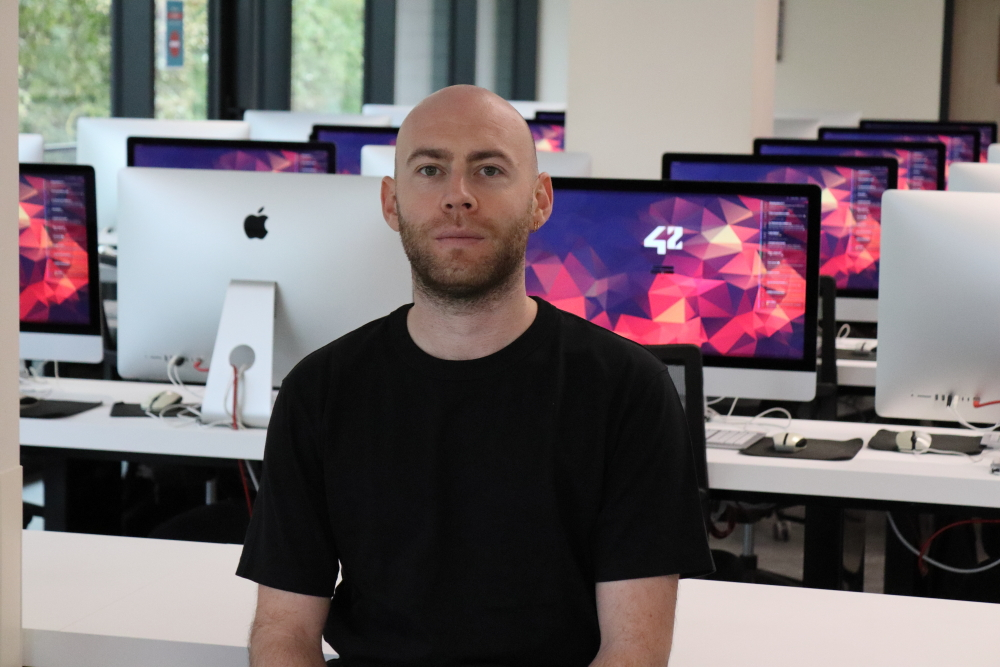

Étudiant Développeur | En reconversion vers la Cybersécurité

Reconversion Stratégique : Après une carrière significative en Analyse Financière et une pause internationale de 5 ans, j'ai entrepris une reconversion complète en informatique à l'École 42 (Lyon).
Focus Cybersécurité : Étudiant Développeur, je développe mes compétences à travers des projets concrets, avec un fort intérêt pour la sécurité des systèmes et la protection des données. Mon parcours unique allie rigueur financière et technicité.
Soft Skills : Je mets à profit mon autonomie, ma gestion des priorités, mon sens des responsabilités et ma résolution de problèmes pour aborder les défis techniques.
Présentation de projets significatifs réalisés à l'École 42.
Description courte du projet et des compétences acquises (ex : manipulation de sockets, gestion de la mémoire, etc.).
Voir le code (GitHub)Description courte du projet et de l'approche en matière de sécurité ou de scripting système.
Voir le code (GitHub)Expériences dans divers secteurs (minier, construction, pêche). Développement de l'autonomie et de la gestion de projet.
Responsable consolidation financière IFRS pour 15 pays. Liaison directe avec les directeurs de pays.